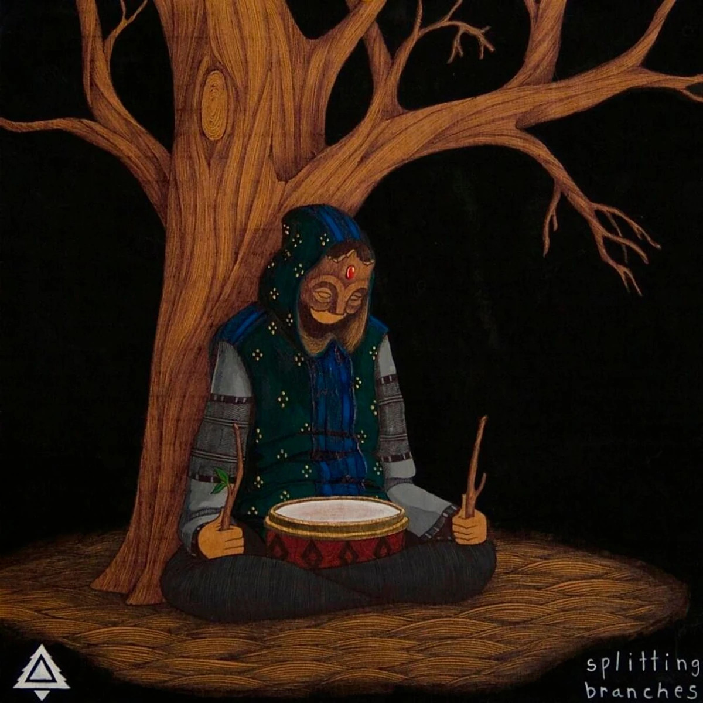

Ugly Is Beautiful - Lançado em 17 de julho de 2020 (versão deluxe lançada em 28 de maio de 2021)
Ugly Is Beautiful - Lançado em 17 de julho de 2020 (versão deluxe lançada em 28 de maio de 2021)Essa página contém toda a discografia de álbuns e EPs de Oliver Tree como artista principal.
Caso queiram saber sobre seus singles, deem uma olhada na Wikipédia de Oliver Tree em inglês, pois tem um artigo exclusivo apenas sobre sua discografia.

Splitting Branches (apenas como Tree) - Lançado em 17 de fevereiro de 2013
Ugly Is Beautiful - Lançado em 17 de julho de 2020 (versão deluxe lançada em 28 de maio de 2021)
 Cowboy Tears - Lançado em 18 de fevereiro de 2022 (versão deluxe lançada em 23 de dezembro de 2022)
Cowboy Tears - Lançado em 18 de fevereiro de 2022 (versão deluxe lançada em 23 de dezembro de 2022)
 Alone in a Crowd - Lançado em 29 de setembro de 2023
Alone in a Crowd - Lançado em 29 de setembro de 2023
Love You Madly Hate You Badly - Lançado em 24 de abril de 2026 (último álbum lançado por Oliver Tree em vida)